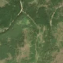
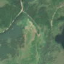

2,9 ha · Beliș, com. Măguri-Răcătău
văzută schimbată prima dată pe 27 mai 2026


Autorizația cea mai apropiată nu acoperă tăierea: schimbarea cade în afara parcelei autorizate.
APV 2500194500360 · Ocolul Silvic Someșul Rece, valabilă 15 nov. 2025 – 31 dec. 2025, la 3 m
Terenul: pădure de stat, după amenajamentul silvic publicat.
Ce se vede în poze: În poza detaliată, zona marcată era acoperită în cea mai mare parte de pădure de rășinoase. În poza «după» apare o fâșie de teren golaș, deschis la culoare, în timp ce pădurea din jur a rămas verde, deci copacii par să fi fost tăiați.